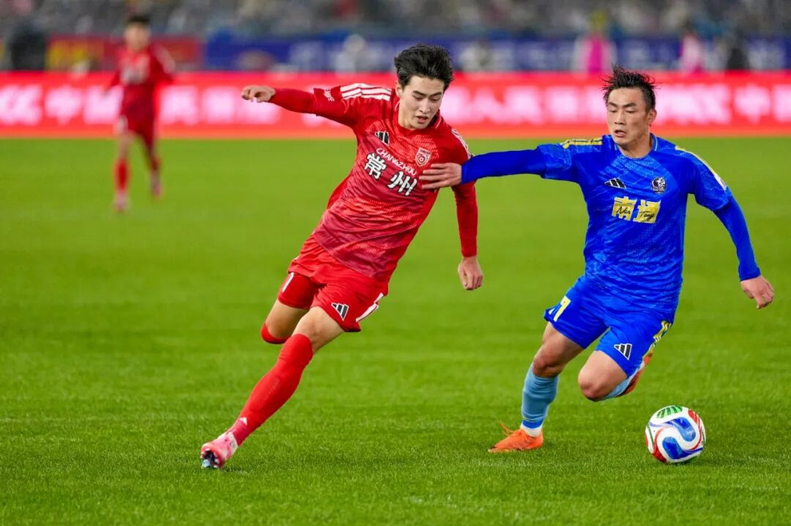
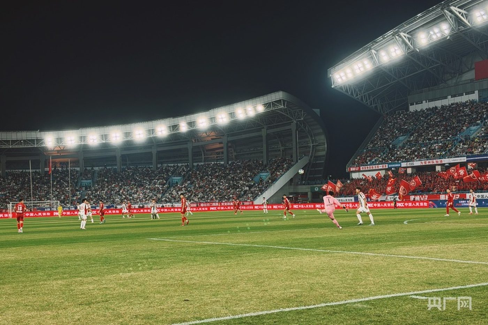
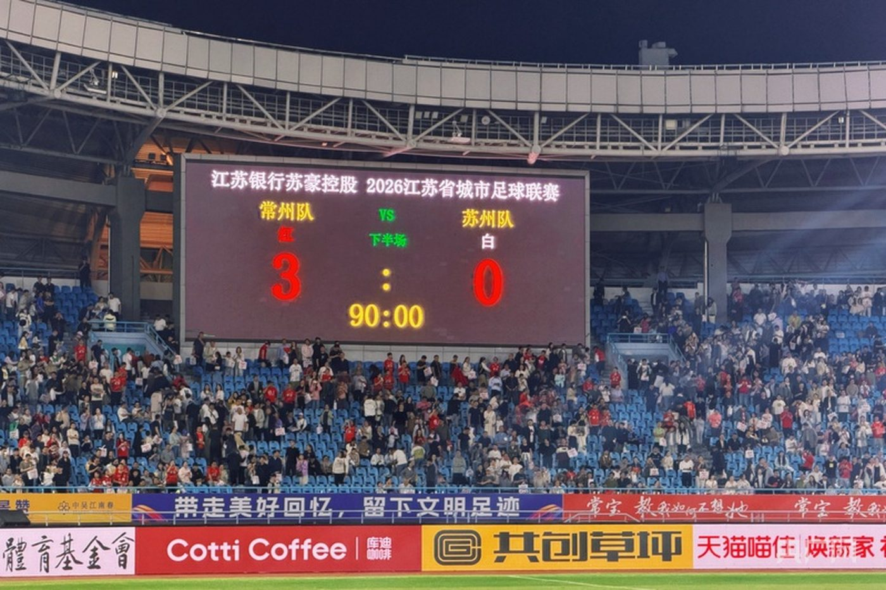
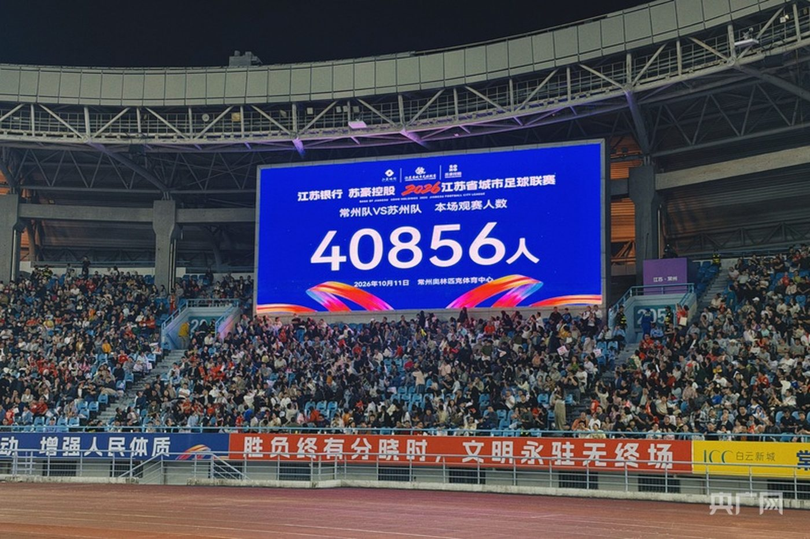
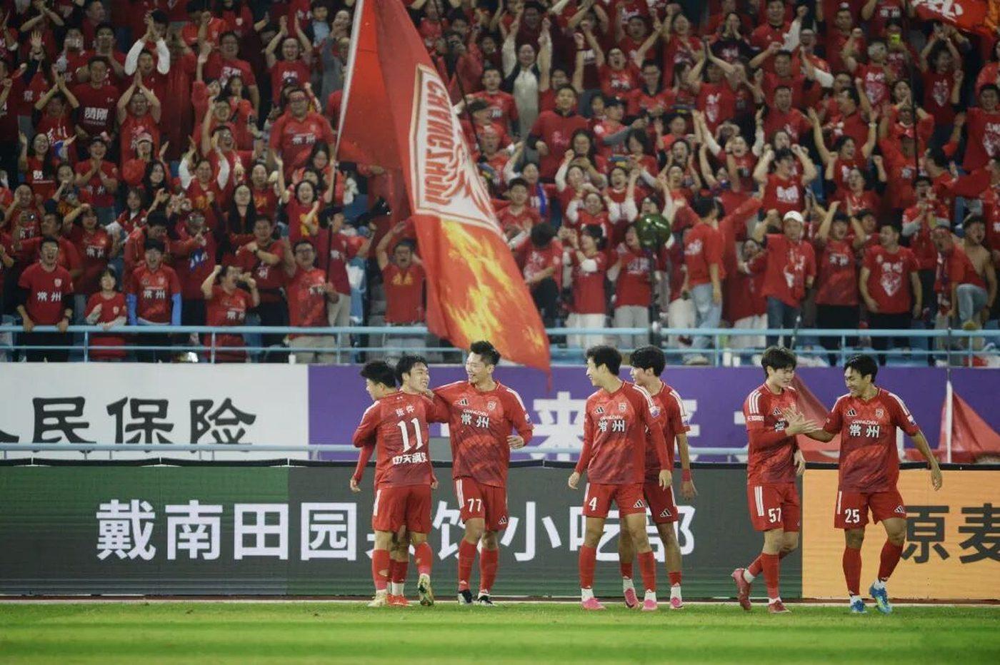

05 · 图集
草皮上的瞬间
常州队 2026 赛季的四场比赛：揭幕战、四分之一决赛、半决赛，还有南京的决赛。 十二个画面，四场比分。
4 月 11 日 · 揭幕战
常州 3 : 0 南通
上届常规赛，南通队 2 比 0 赢过常州。这一次在常州奥体中心，主队用三个球还了回来。

10 月 11 日 · 1/4 决赛 次回合
常州 3 : 0 苏州
首回合 1 比 2 落后，回到主场连进三球，两回合总比分 4 比 2 翻盘。 那天常州奥体中心进了 40,856 人。



10 月 24 日 · 半决赛
常州 3 : 0 盐城
三个进球全部来自角球：李霄鹏一次，高飞两次。两回合 3 比 0，常州第一次进决赛。



10 月 31 日 · 决赛 · 南京奥体中心
无锡 2 : 1 常州
0 比 2 落后，第 83 分钟郭佳泰扳回一球。终场哨响，亚军。场内有 62,356 人。


10 月 31 日 · 南京奥体中心
决赛开球前，场上先演了一段
金色的彩带从看台上垂下来，乐队、旗阵和舞蹈队依次上场。开球前二十分钟， 南京奥体中心先热闹了一遍。